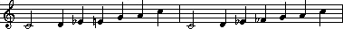
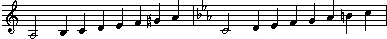
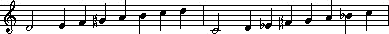
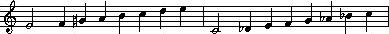
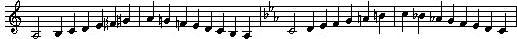
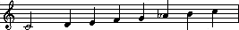
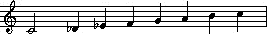
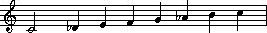
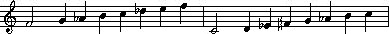
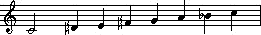

MML reference: Scale
定義（Define）
Scale(mode)
Mode(mode)
HMinor(hmode)
MMinor(mmode)
Major
Minor
HMinor
MMinor
引数（Inputs）
mode, mmode, hmode
スケールを指定します。
以下は、各スケールの音階表です。
ローマ数字は音名を意味します。
臨時記号は、ハ長調（Ｃ-Dur）の場合に付く臨時記号です。
| Mode name | mode | Scale | Scale | 備考 | ||||||
|---|---|---|---|---|---|---|---|---|---|---|
| Ionian （長音階） |
0 | Ⅰ | Ⅱ | Ⅲ | Ⅳ | Ⅴ | Ⅵ | Ⅶ | c d e f g a b |
Major コマンド指定時 長調 ビラーヴァル・タート（インドの音階）。 |
| Dorian | 1 | Ⅰ | Ⅱ | ♭Ⅲ | Ⅳ | Ⅴ | Ⅵ | ♭Ⅶ | c d e-f g a b- |
カーフィー・タート（インドの音階）。 |
| Phrygian | 2 | Ⅰ | ♭Ⅱ | ♭Ⅲ | Ⅳ | Ⅴ | ♭Ⅵ | ♭Ⅶ | c d-e-f g a-b- |
マカーム・クルディー（アラブの音階）。 バイラヴィ・タート（インドの音階）。 |
| Lydian | 3 | Ⅰ | Ⅱ | Ⅲ | ＃Ⅳ | Ⅴ | Ⅵ | Ⅶ | c d e f+g a b |
カリヤーン・タート（インドの音階）。 |
| Mixo-Lydian | 4 | Ⅰ | Ⅱ | Ⅲ | Ⅳ | Ⅴ | Ⅵ | ♭Ⅶ | c d e f g a b- |
カマージ・タート（インドの音階）。 |
| Aeolian （自然短音階） |
5 | Ⅰ | Ⅱ | ♭Ⅲ | Ⅳ | Ⅴ | ♭Ⅵ | ♭Ⅶ | c d e-f g a-b- |
Minor コマンド指定時 短調 アサーワリー・タート（インドの音階）。 |
| Locrian | 6 | Ⅰ | ♭Ⅱ | ♭Ⅲ | Ⅳ | ♭Ⅴ | ♭Ⅵ | ♭Ⅶ | c d-e-f g-a-b- |
|
| Minor blues | 7 | Ⅰ | ＃Ⅱ | ＃Ⅲ | ＃Ⅳ | Ⅴ | ＃Ⅵ | ─ | c d+e+f+g a+ |
※ブルースやロックなどでよく使われる。 |
| Major blues | 8 | Ⅰ | Ⅱ | ♭Ⅲ | ♭Ⅳ | Ⅴ | Ⅵ | ─ | c d e-f-g a  |
※ブルースやロックなどでよく使われる。 |
※Scaleの２小節目は、Ｃ調（ハ調）の場合のスケールを記した。
教会楽の音階において、白玉は終止音、赤い音符は支配音を示します。

| Mode name | mode | hmode | Scale | Scale when Key = C | 備考 | ||||||
|---|---|---|---|---|---|---|---|---|---|---|---|
| Harmonic minor （和声的短音階） |
10 | 0 | Ⅰ | Ⅱ | ♭Ⅲ | Ⅳ | Ⅴ | ♭Ⅵ | Ⅶ | c d e-f g a-b  |
HMinor コマンドにて、引数無し時 |
| Locrian natural13 | 11 | 1 | Ⅰ | ♭Ⅱ | ♭Ⅲ | Ⅳ | ♭Ⅴ | Ⅵ | ♭Ⅶ | c d-e-f g-a b- | |
| Ionian Augmented | 12 | 2 | Ⅰ | Ⅱ | Ⅲ | Ⅳ | ＃Ⅴ | Ⅵ | Ⅶ | c d e f g+a b | |
| Dorian ＃11 | 13 | 3 | Ⅰ | Ⅱ | ♭Ⅲ | ＃Ⅳ | Ⅴ | Ⅵ | ♭Ⅶ | c d e-f+g a b-  |
マカーム・ナグリーズ（アラブの音階）。 |
| Spanish Gypsy (Harmonic minor perfect 5th below) |
14 | 4 | Ⅰ | ♭Ⅱ | Ⅲ | Ⅳ | Ⅴ | ♭Ⅵ | ♭Ⅶ | c d-e f g a-b-  |
マカーム・ヒジャーズィー（アラブの音階）。 |
| Lydian ＃9 | 15 | 5 | Ⅰ | ＃Ⅱ | Ⅲ | ＃Ⅳ | Ⅴ | Ⅵ | Ⅶ | c d+e f+g a b | |
| Altered ♭7 | 16 | 6 | Ⅰ | ♭Ⅱ | ♭Ⅲ | ♭Ⅳ | ♭Ⅴ | ♭Ⅵ | ♭♭Ⅶ | c d-e-f-g-a-b-- | |
| Mode name | mode | mmode | Scale | Scale when Key = C | 備考 | ||||||
|---|---|---|---|---|---|---|---|---|---|---|---|
| Melodic minor （旋律的短音階） |
20 | 0 | Ⅰ | Ⅱ | ♭Ⅲ | Ⅳ | Ⅴ | Ⅵ | Ⅶ | c d e-f g a b  ※下降形は、別途 mode(5) （Aeolian／自然短音階）に設定してください。 |
MMinor コマンドにて、引数無し時 |
| Dorian ♭9 | 21 | 1 | Ⅰ | ♭Ⅱ | ♭Ⅲ | Ⅳ | Ⅴ | Ⅵ | ♭Ⅶ | c d-e-f g a b- | |
| Lydian Augmented |
22 | 2 | Ⅰ | Ⅱ | Ⅲ | ＃Ⅳ | ＃Ⅴ | Ⅵ | Ⅶ | c d e f+g+a b | |
| Mixo-Lydian ＃11 (Lydian ♭7) |
23 | 3 | Ⅰ | Ⅱ | Ⅲ | ＃Ⅳ | Ⅴ | Ⅵ | ♭Ⅶ | c d e f+g a b- | |
| Mixo-Lydian ♭13 |
24 | 4 | Ⅰ | Ⅱ | Ⅲ | Ⅳ | Ⅴ | ♭Ⅵ | ♭Ⅶ | c d e f g a-b- | |
| Semi Locrian (Aeolian ♭5) |
25 | 5 | Ⅰ | Ⅱ | ♭Ⅲ | Ⅳ | ♭Ⅴ | ♭Ⅵ | ♭Ⅶ | c d e-f g-a-b- | |
| Super Locrian (Altered) |
26 | 6 | Ⅰ | ♭Ⅱ | ♭Ⅲ | ♭Ⅳ | ♭Ⅴ | ♭Ⅵ | ♭Ⅶ | c d-e-f-g-a-b- | |
| G Altered | 27 | 7 | ♭Ⅰ | ♭Ⅱ | ♭Ⅲ | Ⅳ | Ⅴ | ♭Ⅵ | ♭Ⅶ | c-d-e-f g a-b- | |
| Mode name | mode | Scale | Scale when Key = C | 備考 | ||||||
|---|---|---|---|---|---|---|---|---|---|---|
| Harmonic Major | 30 | Ⅰ | Ⅱ | Ⅲ | Ⅳ | Ⅴ | ♭Ⅵ | Ⅶ | c d e f g a-b  |
|
| Dorian ♭5 | 31 | Ⅰ | Ⅱ | ♭Ⅲ | Ⅳ | ♭Ⅴ | Ⅵ | ♭Ⅶ | c d e-f g-a b- | |
| Phrygian ♭4 | 32 | Ⅰ | ♭Ⅱ | ♭Ⅲ | ♭Ⅳ | Ⅴ | ♭Ⅵ | ♭Ⅶ | c d-e-f-g a-b- | |
| Lydian ♭3 | 33 | Ⅰ | Ⅱ | ♭Ⅲ | ＃Ⅳ | Ⅴ | Ⅵ | Ⅶ | c d e-f+g a b | |
| Mixo-Lydian ♭9 | 34 | Ⅰ | ♭Ⅱ | Ⅲ | Ⅳ | Ⅴ | Ⅵ | ♭Ⅶ | c d-e f g a b- | |
| Lydian ＃2 ＃5 | 35 | Ⅰ | ＃Ⅱ | Ⅲ | ＃Ⅳ | ＃Ⅴ | Ⅵ | Ⅶ | c d+e f+g+a b | |
| Locrian ♭♭7 | 36 | Ⅰ | ♭Ⅱ | ♭Ⅲ | Ⅳ | ♭Ⅴ | ♭Ⅵ | ♭♭Ⅶ | c d-e-f g-a-a | |
| Mode name | mode | Scale | Scale when Key = C | 備考 | ||||||
|---|---|---|---|---|---|---|---|---|---|---|
| Neapolitan | 40 | Ⅰ | ♭Ⅱ | ♭Ⅲ | Ⅳ | Ⅴ | Ⅵ | Ⅶ | c d-e-f g a b  |
|
| Leading whole-tone | 41 | Ⅰ | Ⅱ | Ⅲ | ＃Ⅳ | ＃Ⅴ | ＃Ⅵ | Ⅶ | c d e f+g+a+b | |
| Lydian Augmented Dominant | 42 | Ⅰ | Ⅱ | Ⅲ | ＃Ⅳ | ＃Ⅴ | Ⅵ | ♭Ⅶ | c d e f+g+a b- | |
| Lydian Dominant ♭6 | 43 | Ⅰ | Ⅱ | Ⅲ | ＃Ⅳ | Ⅴ | ♭Ⅵ | ♭Ⅶ | c d e f+g a-b- | |
| Major Locrian | 44 | Ⅰ | Ⅱ | Ⅲ | Ⅳ | ♭Ⅴ | ♭Ⅵ | ♭Ⅶ | c d e f g-a-b- | |
| Semi Locrian ♭4 | 45 | Ⅰ | Ⅱ | ♭Ⅲ | ♭Ⅳ | ♭Ⅴ | ♭Ⅵ | ♭Ⅶ | c d e-f-g-a-b- | |
| Super Locrian ♭♭3 | 46 | Ⅰ | ♭Ⅱ | ♭♭Ⅲ | ♭Ⅳ | ♭Ⅴ | ♭Ⅵ | ♭Ⅶ | c d-d f-g-a-b- | |
| Mode name | mode | Scale | Scale when Key = C | 備考 | ||||||
|---|---|---|---|---|---|---|---|---|---|---|
| Neapolitan minor | 50 | Ⅰ | ♭Ⅱ | ♭Ⅲ | Ⅳ | Ⅴ | ♭Ⅵ | Ⅶ | c d-e-f g a-b |
|
| Lydian ＃6 | 51 | Ⅰ | Ⅱ | Ⅲ | ＃Ⅳ | Ⅴ | ＃Ⅵ | Ⅶ | c d e f+g a+b | |
| Mixo-Lydian Augmented | 52 | Ⅰ | Ⅱ | Ⅲ | Ⅳ | ＃Ⅴ | Ⅵ | ♭Ⅶ | c d e f g+a b- | |
| Hungarian Gypsy | 53 | Ⅰ | Ⅱ | ♭Ⅲ | ＃Ⅳ | Ⅴ | ♭Ⅵ | ♭Ⅶ | c d e-f+g a-b- | |
| Locrian Dominant | 54 | Ⅰ | ♭Ⅱ | Ⅲ | Ⅳ | ♭Ⅴ | ♭Ⅵ | ♭Ⅶ | c d-e f g-a-b- | |
| Ionian ＃2 | 55 | Ⅰ | ＃Ⅱ | Ⅲ | Ⅳ | Ⅴ | Ⅵ | Ⅶ | c d+e f g a b | |
| Ultra Locrian ♭♭3 | 56 | Ⅰ | ♭Ⅱ | ♭♭Ⅲ | ♭Ⅳ | ♭Ⅴ | ♭Ⅵ | ♭♭Ⅶ | c d-d f-g-a-a | |
| Mode name | mode | Scale | Scale when Key = C | 備考 | ||||||
|---|---|---|---|---|---|---|---|---|---|---|
| Gypsy | 60 | Ⅰ | ♭Ⅱ | Ⅲ | Ⅳ | Ⅴ | ♭Ⅵ | Ⅶ | c d-e f g a-b  |
※ジプシーの音楽に良く使われる。 マカーム・ヒジャーズカル（アラブの音階）。 バイラヴ・タート（インドの音階）。 |
| Lydian ＃2 ＃6 | 61 | Ⅰ | ＃Ⅱ | Ⅲ | ＃Ⅳ | Ⅴ | ＃Ⅵ | Ⅶ | c d+e f+g a+b | |
| Ultra Phrygian | 62 | Ⅰ | ♭Ⅱ | ♭Ⅲ | ♭Ⅳ | Ⅴ | ♭Ⅵ | ♭♭Ⅶ | c d-e-f-g a-a | |
| Hungarian minor | 63 | Ⅰ | Ⅱ | ♭Ⅲ | ＃Ⅳ | Ⅴ | ♭Ⅵ | Ⅶ | c d e-f+g a-b  |
※ハンガリー以東のヨーロッパで民謡に使われる短音階。 マカーム・ナワサル（アラブの音階）。 |
| Oriental | 64 | Ⅰ | ♭Ⅱ | Ⅲ | Ⅳ | ♭Ⅴ | Ⅵ | ♭Ⅶ | c d-e f g-a b- | |
| Ionian Augmented ＃2 | 65 | Ⅰ | ＃Ⅱ | Ⅲ | Ⅳ | ＃Ⅴ | Ⅵ | Ⅶ | c d+e f g+a b | |
| Locrian ♭♭3 ♭♭7 | 66 | Ⅰ | ♭Ⅱ | ♭♭Ⅲ | Ⅳ | ♭Ⅴ | ♭Ⅵ | ♭♭Ⅶ | c d-d f g-a-a | |
| Mode name | mode | Scale | Scale when Key = C | 備考 | ||||||
|---|---|---|---|---|---|---|---|---|---|---|
| Hungarian major | 70 | Ⅰ | ＃Ⅱ | Ⅲ | ＃Ⅳ | Ⅴ | Ⅵ | ♭Ⅶ | c d+e f+g a b-  |
|
| Super Locrian ♭♭6 ♭♭7 | 71 | Ⅰ | ♭Ⅱ | ♭Ⅲ | ♭Ⅳ | ♭Ⅴ | ♭♭Ⅵ | ♭♭Ⅶ | c d-e-f-g-g a | |
| Harmonic minor ♭5 | 72 | Ⅰ | Ⅱ | ♭Ⅲ | Ⅳ | ♭Ⅴ | ♭Ⅵ | Ⅶ | c d e-f g-a-b | |
| Super Locrian ＃6 | 73 | Ⅰ | ♭Ⅱ | ♭Ⅲ | ♭Ⅳ | ♭Ⅴ | Ⅵ | ♭Ⅶ | c d-e-f-g-a b- | |
| Melodic minor ＃5 | 74 | Ⅰ | Ⅱ | ♭Ⅲ | Ⅳ | ＃Ⅴ | Ⅵ | Ⅶ | c d e-f g+a b | |
| Dorian ♭9 ＃11 | 75 | Ⅰ | ♭Ⅱ | ♭Ⅲ | ＃Ⅳ | Ⅴ | Ⅵ | ♭Ⅶ | c d-e-f+g a b- | |
| Lydian Augmented ＃3 | 76 | Ⅰ | Ⅱ | ＃Ⅲ | ＃Ⅳ | ＃Ⅴ | Ⅵ | Ⅶ | c d e+f+g+a b | |
内容（Contents）
スケールを設定します。
作曲を支援するコマンドで、臨時記号を用いることなく複雑なコードを用いることができます。
詳細は、スケールとコードをご参照ください。
基本は、長調の音楽の時は"Ionian"(0)スケールを使います。
短調の時は、自然短音階である"Aeolian"(5)スケールを使う他、
和声的短音階の"Harmonic minor"(10)や、旋律的短音階の"Melodic minor"(20)を使います。
Harmonic minorやMelodic minorは、導音（Ⅶの音）に♭が付かないため、
短調の時においてもⅤの和音を使うことができ、Ⅴ→Ⅰへの解決が可能です（次項参照）。
これらの指定により、ＭＭＬから臨時記号を排除することができます。
その他のスケールは、是非、研究してみてください。
注意（Notes）
ＭＭＬコンパイラーの疑似命令です。
次にK{}コマンド若しくは、Scaleコマンドが来るまで、
本コマンドで指定された音階に、自動で臨時記号が付加されてコンパイルされます。
各記述ブロック（Sub, BGM, SE）では、デフォルトは調号無し（ハ長調、アイオニアンスケール）となります。
従い、サブルーチンコールする場合は、サブルーチン先も調号・スケールを指定して下さい。
音楽理論については、別途、和声についての参考書等をご参照ください。
例（Sample）
K{g-moll} MMinor gab>cdefg Minor agfedc<ba g1 /* g-moll melodic minor scale */